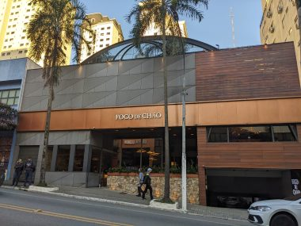
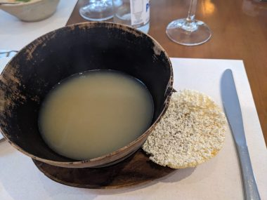
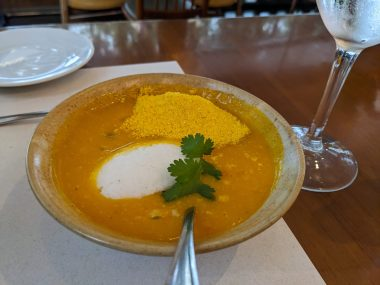
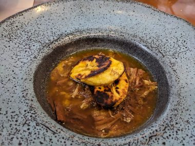

ブラジル、おいしいサンパウロ～お値打ちミシュランガイド掲載レストラン～
前回：ブラジルのサンパウロ観光～治安の良いエリアで安全なおすすめホテル～
レストラン格付けのミシュランガイドはサンパウロ版を発行している。
ミシュランガイドが参考になるのは、味だけでなく値段とのバランス、店の雰囲気やスタッフの対応など総合的に考慮されていること。さらに、おすすめ料理までも書かれているので、何を食べたらいいのか迄参考になるのが頼りになる。
今回の滞在では、ビブグルマン（価格以上の満足感が得られる料理）と、セレクティドレストラン（上質な料理）、というカテゴリーのなかで、ブラジル料理のレストラン、かつ低価格帯のお財布にやさしいレストランのランチ巡りをした。
ブラジル料理の有名な食べ物といえば、シェラスコ。
Fogo de Chãoはシェラスコ食べ放題レストラン。
土曜１２時の開店直後に行った。予約していかなかったが、とても広く席数が多いのでランチなら予約なしでも大丈夫そう。

多種多様な野菜やフルーツが並ぶサラダバーからサラダを適当にもりつけて席に着いて食べ始めると、次から次へと串に刺した肉がテーブルに運ばれてくる。ラム肉からカルビまでいろいろな種類の肉を味わうことができる。そしてそれぞれジューシーでおいしい。夕食はいらないくらい肉をもりもりと食べた。ポンデケージョも食べ放題だが、ポンデケージョが胃袋に入る余裕はもはやない。
小さいサイズの水のボトル３本と大人ふたり食べ放題で税込み５３６アル(15437円）ここは低価格帯ではない。
パウリスタ通りから歩いてすぐなので、日曜だったらパウリスタアベニューは午前と午後は歩行者天国になるので食後の散歩に楽しかっただろう。
Tordeihas。日曜に開店直後の１２時に着いたら予約なしでもすぐに席に着けた。平日はディナーのみ営業で、土日はランチも営業している。
↓ Cardo de Peixe com Tucupi e Beiju

魚のだしのスープで、トゥクピーというキャッサバ芋のアマゾンの伝統的な調味料を使っている。あっさりとした滋味深い味。添えられているクラッカーを割り入れて浸してたべる。４２レアル。
↓Bobozinho de Camarao

ココナッツミルクベースのエビのスープ。白く浮いているのはキャッサバの柔らかいお団子みたいなもの。これはミシュランガイドでおすすめだったので食べてみたけど、すごーーーーーくおいしかった。今回は前菜サイズの小さいのをたべたが、メインディッシュとしてオーダーしたかった。忘れられない味。またサンパウロにきたら必ず食べにくるとおもう。６９レアル。
↓ Barreado

土鍋で１０時間じっくりと調理した牛肉がほろほろと柔らかい。乗っているのはグリルしたプランテーンという調理用バナナ。おかわりできる。ふたりともメインにこれを頼んだが、おかわりして、もうお腹いっぱい。３杯目をすすめられたが、ギブアップ。見た目とは裏腹にけっこう脂っぽい。夜に食べてたら胃もたれしてたかも。ランチで食べられてよかった。９５レアル（一人）。ランチのレストラン巡りをする理由はここにある。夜はもうお腹はすかなくて、フルーツだけで済ませることができる。
パウリスタアベニューとオスカーフレイル通りの真ん中あたりにある。パウリスタアベニューから行くと坂をおりることになり、オスカーフレイル通りからは坂をあがることになる。食後はオスカーフレイル通りまで下ってウインドーショッピングを楽しみながらぶらぶらと歩いてカフェでブラジルコーヒーを堪能するのも楽しい。
続き：ブラジル、おいしいサンパウロ～お値打ちミシュランガイドレストラン～続き

 180以上の国と地域で使える【World eSIM】
180以上の国と地域で使える【World eSIM】